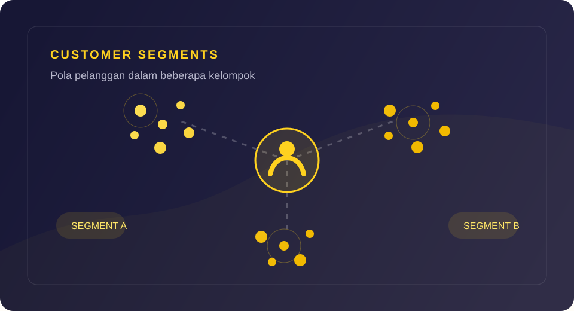
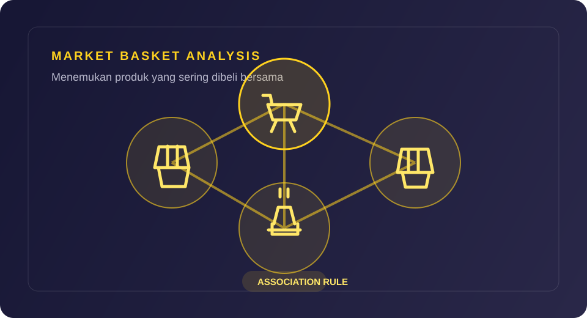
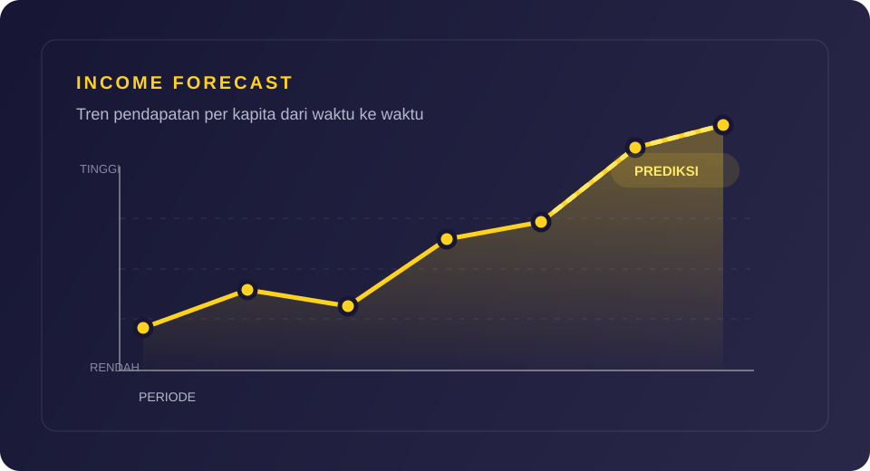
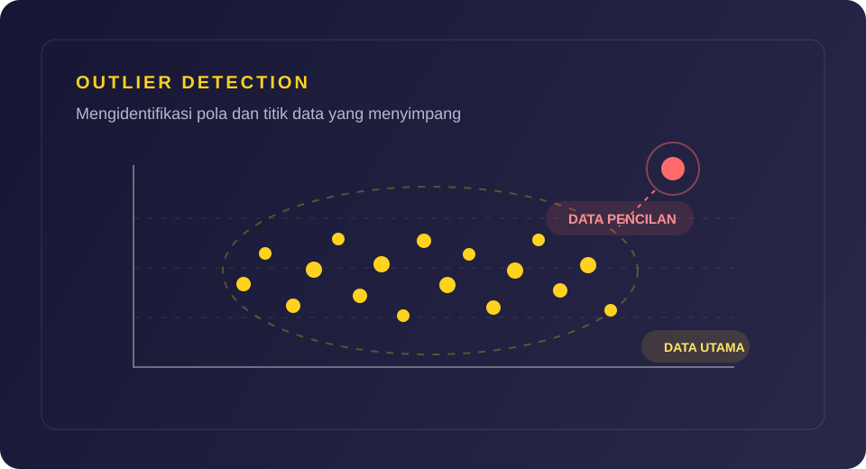

DATA ANALYST
Mengubah data menjadi wawasan yang mendukung keputusan bisnis dan kebijakan yang tepat.
Lulusan Statistika dengan pengalaman magang dalam pengolahan data dan pelaporan; terbiasa menggunakan Excel, R, dan Python untuk mendukung analisis bisnis. Fokus pada penyediaan solusi berbasis data untuk efisiensi bisnis dan standar keamanan operasional. Berpengalaman dalam administrasi data dan pelaporan dengan fokus pada ketelitian, ketepatan waktu, dan dukungan operasional, saya bertekad untuk memberikan nilai tambah bagi perusahaan melalui ketelitian analisis dan integritas kerja yang tinggi.

Deskripsi: Proyek ini mengelompokkan pelanggan berdasarkan data penjualan untuk mengidentifikasi segmen dengan karakteristik yang serupa. Hasil segmentasi membantu memberikan gambaran pola pelanggan sebagai dasar untuk menyusun strategi pemasaran dan layanan yang lebih tepat sasaran.
Metode: Clustering, eksplorasi dan visualisasi data
Fokus: Segmentasi pelanggan dan interpretasi karakteristik tiap kelompok
Lihat Hasil Proyek
Deskripsi: Proyek ini menganalisis data transaksi menggunakan pendekatan Market Basket Analysis untuk menemukan pola keterkaitan antarproduk yang dibeli bersama. Temuan aturan asosiasi dapat dimanfaatkan sebagai bahan pertimbangan dalam penataan produk, promosi, dan rekomendasi produk.
Metode: Market Basket Analysis dan Association Rule Mining
Fokus: Identifikasi kombinasi produk dan interpretasi aturan asosiasi
Lihat Hasil Proyek
Deskripsi: Proyek analisis statistik untuk mempelajari dan memprediksi pendapatan per kapita di masa mendatang. Menghasilkan wawasan yang dapat mendukung penyusunan kebijakan ekonomi dan pembangunan daerah.
Metode: Analisis Regresi, Interpretasi Hasil Statistik, Prediksi
Alat: Software Statistik (Python), Pengolahan Data Sekunder, Publikasi Web
Lihat Hasil Proyek
Deskripsi: Penelitian ini memperbaiki kategori kesejahteraan dan mendeteksi outlier pada data rumah tangga di kota-kota Aceh.
Metode: Clustering K-Modes dan K-Medoids, serta klasifikasi Decision Tree
Hasil: K-Medoids mencapai akurasi perbaikan kategori 96,17% dan mendeteksi 2.326 outlier dari 60.744 data. Decision Tree mencapai akurasi klasifikasi 98,37% setelah data diperbaiki dan dibersihkan.
Lihat Tugas AkhirBrigade Pangan Tuah Talamau Pasaman Barat | Pasaman Barat | Juli 2025 – Sekarang
Dinas Komunikasi, Informatika dan Statistik Kota Banda Aceh | Banda Aceh | Februari 2023 – Juni 2023
Tsunami and Disaster Mitigation Research Center (TDMRC) Aceh | Banda Aceh | Juni 2022 – Juli 2022
Universitas Syiah Kuala, Banda Aceh | Agustus 2020 – Juli 2024
IPK: 3.7 dari skala 4.0
Pasaman | Juli 2017 – Mei 2020
WhatsApp: +62 822-1154-2596
Email: alharidtmahmudi@gmail.com
LinkedIn: linkedin.com/in/alharidtmahmudi/
Instagram: instagram.com/alharidtm
GitHub: github.com/alharidtm